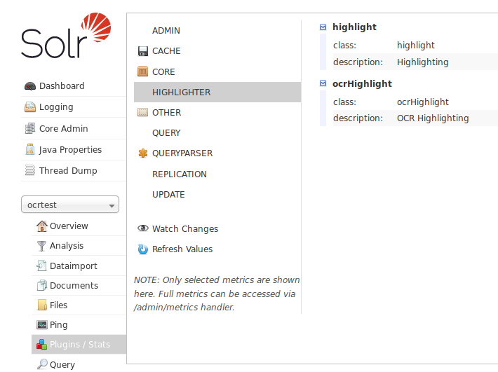

Requirements
- Some familiarity with configuring Solr
- Solr >= 7.x
- OCR documents need to be in hOCR, ALTO or MiniOCR formats, with at least page-, and word-level segmentation
- One OCR file needs to correspond to one document in the search index
There is a hack to support multiple index documents per file, but the reverse (multiple files per index document) is not possible, you will have to merge the files.
Installation
Download the JAR for the latest release from the GitHub Releases
website and drop it
into your core’s lib directory.
Compiling
If you want to use the latest bleeding-edge version, you can also compile the plugin yourself. For this you will need at least Java 8 and Maven:
$ mvn package
The JAR will be in target/solr-ocrhighlighting-$version.jar.
Configuration
Note
If you’re using a format other than hOCR, refer to the OCR Formats documentation for the values you need to put into your configuration and schema.
Using the plugin requires some configuration in your solrconfig.xml. For one,
you have to define a search component to add the OCR highlighting information
for your format to the response. Also, you will have to specify which of
your fields contain OCR text (i.e. the solrconfig is currently tied to the schema):
<config>
<searchComponent class="org.mdz.search.solrocr.solr.HighlightComponent" name="ocrHighlight"
ocrFormat="org.mdz.search.solrocr.formats.hocr.HocrFormat">
<lst name="ocrFields">
<!-- Requires a field named `ocr_text` in the schema -->
<str>ocr_text</str>
</lst>
</searchComponent>
<!-- Add the OCR highlighting component to the components on your request handler(s) -->
<requestHandler name="/select" class="solr.SearchHandler">
<arr name="components">
<str>query</str>
<str>highlight</str>
<!-- This value needs to be equal to the `name` attribute on the searchComponent -->
<str>ocrHighlight</str>
</arr>
</requestHandler>
</config>
Note
For this simple guide, the configuration will store the OCR documents in the Solr index itself. If you want to store them outside of the index on the file system, refer to the External Storage documentation.
For your schema, you will have to define a type that enables the storage of
offsets and positions. Enabling term vectors is optional, although it
significantly speeds up highlights wildcard queries. The indexing analyzer chain for
the field type needs to start with the HTMLStripCharFilterFactory. For ALTO,
you need the specialized org.mdz.search.solrocr.formats.alto.AltoCharFilterFactory instead.
<fieldtype name="text_ocr" class="solr.TextField" storeOffsetsWithPositions="true" termVectors="true">
<analyzer>
<!-- Strip away the XML/HTML tags to arrive at a plaintext version of the OCR -->
<charFilter class="solr.HTMLStripCharFilterFactory" />
<!-- rest of your analyzer chain -->
<!-- ..... -->
</analyzer>
</fieldtype>
You can then use this new field type in your schema:
<fields>
<field name="id" type="string" multiValued="false" indexed="true" stored="true" required="true"/>
<field name="ocr_text" type="text_ocr" indexed="true" stored="true" />
</fields>
After you’ve saved your configuration and schema and restarted Solr, you can
verify that the plugin is activated by checking the Plugins / Stats section in the
Solr admin interface for your core. There should now be a Highlighting plugin
with the name you chose:

Indexing
Indexing for most usage scenarios (except for externally stored UTF8 files) is simple: Just POST the document with appropriately escaped OCR in the corresponding field.
A simple example using curl and jq for escaping:
$ curl -H "Content-Type: application/json" \
-d '{"id": "document_id", "ocr_field": $(cat ocrdocument.xml |jq -Rs)}'
That’s it! Assuming Solr is correctly configured, you should now have a document that can be highlighted in your index.
Querying
At query time, no extra parameters besides hl=true and an inclusion of your OCR fields in the
hl.fields parameter are required.
Note
For a list of all available parameters, rever to the Query Parameters documentation
Given an index with the fields id, title and ocr_text, and a query like the following:
GET http://localhost:8983/solr/ocrtest/select?fl=id,title&hl=on&hl.fl=ocr_text&df=ocr_text&q=pirate
should yield a response like this:
{
"responseHeader": {
"status": 0,
"QTime": 182
},
"response": {
"numFound": 216,
"start": 0,
"docs": [
{
"id": "Volume_0282",
"title": "Spartacus, Or, The Roman Gladiator",
}
]
},
"highlighting": {
"Volume_0282": {}
},
"ocrHighlighting": {
"Volume_0282": {
"ocr_text": {
"snippets": [
{
"page": "page_44",
"text": "Easy to have, impregnable to hold, An Island to be rul'd, and "
"I to rule ![Enter a Gladiator, shouting towards <em>Pirates</em>' "
"quarter.]GLAD. Ho, there ! what ho ! the troops are on the move, "
"My Chief! my Chief! the <em>Pirates</em> steal away !",
"score": 881062.75,
"region": {
"ulx": 194,
"uly": 807,
"lrx": 1196,
"lry": 1008
},
"highlights": [
[
{
"text": "Pirates'",
"ulx": 694,
"uly": 82,
"lrx": 823,
"lry": 111
}
],
[
{
"text": "Pirates",
"ulx": 450,
"uly": 162,
"lrx": 563,
"lry": 190
}
]
]
}
],
"numTotal": 11
}
}
}
}
As you can see, the ocrHighlighting component contains for every field in
every matching document a list of snippets that match the query. The snippet
contains the page the match occurred on, the matching text, the score of
the passage and the coordinates of the region on the page image containing the
passage text.
Additionally, it also includes the region and text for every highlighting hit (i.e. the actual tokens that matched the query). Every hit in the document is an array of hit regions: If a given hit spans multiple lines, it is split into multiple regions, one for every line.
Note that the hit region coordinates are by default relative to the containing region, not the page! (although this can be changed).
numTotal lists the total number of snippets that were found in this document
for the given search query. You can control the number of snippets to be returned
with the hl.snippets parameter (or f.{fieldname}.hl.snippets if you only want
to set it for a given field). Snippets are sorted by their score.